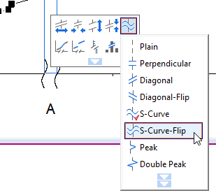

Mehrere Achsenunterbrechungen
Multiple-Axis-Breaks
Zusammenfassung
Origin unterstützt mehrere Unterbrechungen auf einer Achse, wie unten zu sehen. Die Anzahl der Unterbrechungen und deren Positionen können im Dialog Achsen festgelegt werden. Außerdem können Sie Rezessionsbalken hinzufügen (die "vertikalen Balken", die unten gezeigt werden), indem mehrere Referenzlinien auf der X-Achse hinzugefügt und die Abstände zwischen ihnen gefüllt werden.

Origin-Version mind. erforderlich: 2017 SR0
Was Sie lernen werden
Dieses Tutorial zeigt Ihnen, wie Sie:
- mehrere Unterbrechungen sowohl zur X- als auch zur Y-Achse hinzufügen,
- das Beschriftungsformat der Achsenhilfsstriche benutzerdefiniert anpassen,
- die Spannbreiten, die unterbrochen sind, durch fehlende Werte vertikal füllen,
Die Beschriftungsanzeige benutzerdefiniert anpassen und Achsenunterbrechungen hinzufügen
Dieses Tutorial ist mit dem Ordner Multiple Axis Breaks im Projekt (<Origin-Verzeichnis>\Samples\Tutorial Data.opj) verbunden.
Sie können dieses Diagramm auch im Lernzentrum sehen (wählen Sie im Menü Hilfe: Lernzentrum oder drücken Sie die F11-Taste). Es wird in der Tabelle der Beispieldiagramme unter Linien- und Symboldiagramme aufgelistet. Klicken Sie doppelt auf das Miniaturbild, um den Zielordner zu öffnen.
- Aktivieren Sie die Arbeitsmappe. Markieren Sie die Spalten col(A) und col(B) und wählen Sie Zeichnen: Einfache 2D: Liniendiagramm im Origin-Hauptmenü, um ein Liniendiagramm zu zeichnen. Markieren und löschen Sie die Legende.
- Um die Diagrammachsen benutzerdefiniert anzupassen, klicken Sie auf die untere Achse und wählen dann in der Auswahlliste der letzten Schaltfläche in der Minisymbolleiste Achsendialog.
- Legen Sie auf der Registerkarte Skalierung für die Horizontale Achse im Dialog die Skalierung der X-Achse folgendermaßen fest:
- Wählen Sie das Symbol Unten auf der Registerkarte Beschriftung der Hilfsstriche, ändern Sie das Anzeigeformat der Hilfsstrichsbeschriftungen auf 20 (steht für Jahr JJ) und fügen Sie ein Präfix ' hinzu.
- Um mehrere Unterbrechungen zu der X-Achse hinzuzufügen, wählen Sie das Symbol Horizontal auf der Registerkarte Unterbrechungen. Aktivieren Sie das Kontrollkästchen Aktivieren und legen Sie 3 Achsenunterbrechungen fest.
- Klicken Sie auf die Schaltfläche Details, um den Dialog Details der Unterbrechungen zu öffnen, und setzen Sie die Unterbrechung1 auf 01.12.1961 bis 01.09.1972.
- Wählen Sie Unterbrechung 2 im linken Bedienfeld und ändern Sie die Eingabe auf 31.03.1977 und 29.08.1980. Wechseln Sie zum Zweig Unterbrechung 3 und ändern Sie die Unterbrechung in 27.07.84 bis 01.03.07 fest. Klicken Sie auf OK, um die Einstellungen anzuwenden, und verlassen Sie den Dialog Details der Unterbrechungen. Klicken Sie im Dialog Achsen auf Anwenden, um die Änderungen anzuzeigen.
- Um die Y-Achse benutzerdefiniert anzupassen, wählen Sie das Symbol Links auf der Registerkarte Beschriftung der Hilfsstriche und verwenden das Format Technisch:1K für die Anzeige der Hilfsstrichsbeschriftung. Setzen Sie das Präfix auf "$". Klicken Sie auf Anwenden, um die Änderungen im Diagramm anzuzeigen.
- Gehen Sie bei aktiviertem Symbol Vertical erneut zur Registerkarte Unterbrechungen und aktivieren Sie 2 Achsenunterbrechungen bei den Skalierungswerten 3,1T bis 4,5T sowie 6,7T bis 12,5T, wie Sie das auch für die X-Achse in Schritt 4 und 6 getan haben.
- Klicken Sie auf OK, um diese Einstellungen anzuwenden. Sie erhalten in etwa folgendes Diagramm:
 |
Wenn Achsenunterbrechungen zur Diagrammachse hinzugefügt wurden, können Sie ihr Aussehen anpassen, in dem Sie auf die Achsenunterbrechung klicken und die Schaltflächen der Minisymbolleiste verwenden, um die Länge des Unterbrechungssymbols, den Symbolabstand, die Symbolform etc. zu ändern.
-
- 
|
Rezessionsbalken hinzufügen
- Klicken Sie doppelt auf die X-Achse, um den Dialog Achsen zu öffnen. Gehen Sie zur Registerkarte Referenzlinien und klicken Sie auf die interaktive Schaltfläche
 neben dem Textfeld Referenzlinien bei Wert, um die Spalte col(C) im Arbeitsblatt auszuwählen. Die X-Koordinaten aller Rezessionszeiträume werden in der Anzeigetabelle als Referenzlinien aufgeführt. Aktivieren Sie dann das Kontrollkästchen Abwechselnd füllen, um jeden Zeitraum zu füllen.
neben dem Textfeld Referenzlinien bei Wert, um die Spalte col(C) im Arbeitsblatt auszuwählen. Die X-Koordinaten aller Rezessionszeiträume werden in der Anzeigetabelle als Referenzlinien aufgeführt. Aktivieren Sie dann das Kontrollkästchen Abwechselnd füllen, um jeden Zeitraum zu füllen.
- Klicken Sie auf OK, um diese Einstellungen anzuwenden.

Weitere Schritte der benutzerdefinierten Anpassung
Die folgenden Schritte können das Diagramm weiterführend benutzerdefiniert anpassen, um genau so auszusehen, wie das Bild unter Zusammenfassung.
- Klicken Sie doppelt auf den Titel der X-Achse Date im Diagramm und benennen Sie ihn in Year um.
- Um den Bereich der Y-Achse zu ändern, klicken Sie auf die linke Achse und wählen dann in der Auswahlliste der letzten Schaltfläche in der Minisymbolleiste Achsendialog. Legen Sie auf der Registerkarte Skalierung für die Vertikale Achse im Dialog die Werte für Von, Bis, Große und Kleine Hilfsstriche folgendermaßen fest.
- Kehren Sie zurück zur Registerkarte Unterbrechungen, wählen Sie die erste Achsenunterbrechung und klicken Sie auf Details, um den Dialog Details der Unterbrechungen bei ausgewählter Unterbrechung 1 zu öffnen. Deaktivieren Sie das Kontrollkästchen Auto neben der Unterbrechungsposition und geben Sie einen Wert von 38% ein. Deaktivieren Sie das Kontrollkästchen Automatisch skalieren und ändern Sie die Einstellungen der Hilfsstriche folgendermaßen:
- Wählen Sie Unterbrechung 2 aus und legen Sie die Unterbrechungsposition, die großen und die kleinen Hilfsstriche, wie unten zu sehen, fest.
- Klicken Sie auf OK, um diese Einstellungen anzuwenden und den Dialog Details der Unterbrechungen zu schließen. Klicken Sie auf Anwenden im Dialog Achsen, um die Einstellungen anzuwenden.
- Wählen Sie die Registerkarte Gitternetzlinien. Wählen Sie die Symbole für Vertikal und Horizontal im linken Bedienfeld und aktivieren Sie Gegenüber, um einen Rahmen um die obere und rechte Achse zu zeigen.
- Klicken Sie mit der rechten Maustaste auf einen leeren Bereich in dem Diagrammlayer 1 und wählen Sie Layertitel hinzufügen/Modifizieren im Kontextmenü. Geben Sie US Recessions and Recoveries als Layertitel ein.
- Wählen Sie den Knoten Graph im linken Bedienfeld des Dialogs Details Zeichnung und passen Sie die Seitendimension an.